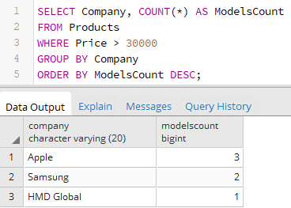

Вернуться на главную страницу →
Вернуться на главную страницу →
Группировка
Для группировки данных в PostgreSQL применяются операторы GROUP BY и HAVING, для использования которых применяется следующий формальный синтаксис:
Для рассмотрения операторов возьмем следующую таблицу:
GROUP BY
Оператор GROUP BY определяет, как строки будут группироваться.
Например, сгруппируем товары по производителю
Первый столбец в выражении SELECT - Company представляет название группы, а второй столбец - ModelsCount представляет результат функции Count, которая вычисляет количество строк в группе.

Стоит учитывать, что любой столбец, который используется в выражении SELECT (не считая столбцов, которые хранят результат агрегатных функций), должны быть указаны после оператора GROUP BY. Так, например, в случае выше столбец Company указан и в выражении SELECT, и в выражении GROUP BY.
И если в выражении SELECT производится выборка по одному или нескольким столбцам и также используются агрегатные функции, то необходимо использовать выражение GROUP BY. Так, следующий пример работать не будет, так как он не содержит выражение группировки:
Другой пример, добавим группировку по количеству товаров:
Оператор GROUP BY может выполнять группировку по множеству столбцов.
Если столбец, по которому производится группировка, содержит значение NULL, то строки со значением NULL составят отдельную группу.
Следует учитывать, что выражение GROUP BY должно идти после выражения WHERE, но до выражения ORDER BY:
Фильтрация групп. HAVING
Оператор HAVING указывает, какие группы будут включены в выходной результат, то есть выполняет фильтрацию групп. Его использование аналогично применению оператора WHERE.
Например, сгруппируем по производителям и найдем все группы, для которых определено более 1 модели:
При этом в одной команде мы можем использовать выражения WHERE и HAVING:
То есть в данном случае сначала фильтруются строки: выбираются те товары, общая стоимость которых больше 80000. Затем выбранные товары группируются по производителям. И далее фильтруются сами группы - выбираются те группы, которые содержат больше 1 модели.
Если при этом необходимо провести сортировку, то выражение ORDER BY идет после выражения HAVING:
Здесь группировка идет по производителям, и также выбирается количество моделей для каждого производителя (Models) и общее количество всех товаров по всем этим моделям (Units). Затем группы сортируются по количеству товаров по убыванию.
GROUPING SETS, CUBE и ROLLUP
В дополнение к оператору GROUP BY PostgreSQL поддерживает еще три специальных расширения для группировки данных: GROUPING SETS, ROLLUP и CUBE.
GROUPING SETS
Оператор GROUPING SETS группирует получемые наборы отдельно:
В выражении SELECT производится выборка компаний, количества моделей и количества товаров. То есть мы получаем три категории. Оператор GROUPING SETS производит группировку по двум столбцам - Company и ProductCount. В итоге будет создаваться две группы: 1) компании и количество моделей и 2)количество моделей и количество товаров.
ROLLUP
Оператор ROLLUP добавляет суммирующую строку в результирующий набор:
Как видно из скриншота, в конце таблицы была добавлена дополнительная строка, которая суммирует значение столбцов.
При группировке по нескольким критериям ROLLUP будет создавать суммирующую строку для каждой из подгрупп:
При сортировке с помощью ORDER BY следует учитывать, что она применяется уже после добавления суммирующей строки.
CUBE
CUBE похож на ROLLUP за тем исключением, что CUBE добавляет суммирующие строки для каждой комбинации групп.